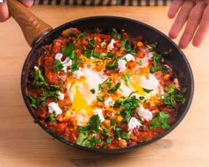

Description
A hearty and easy dish for any time of day. Inspired/Adapted from KWOOK.
Ingredients
- 1 can of whole peeled tomatoes (San Marzano is best)
- 1/2 white onion
- 1/2 bell pepper
- 2 tbsp chopped cilantro
- 1 tbsp olive oil
- 1 tsp ground cumin or cumin seeds
- 2 tsp paprika
- 1 tsp salt
- 2 cloves of garlic
- 2 eggs
- 2 tbsp feta crumble
- optional - 1-2 hot peppers for spiciness
- optional - 1 to 2 tsp of turmeric powder
- optional - 1 can of chickpeas
- optional - 1 can of roasted peppers
Steps
- Place a pan on medium heat and coat with olive oil.
- Dice up your onions and peppers then put them into a pan and saute until fragrant (a couple minutes).
- Add in cumin, paprika, and salt, then stir and saute.
- Once ingredients have become soft and smokey, add in garlic. Cook until fragrant.
- Add in tomatoes and stir. Adjust heat down to low-medium to bring the dish to a gentle simmer.
- Crack 2 eggs directly into the pan. Add a small amount of water to help the eggs steam, then place a cover over the pan. Allow the eggs to steam/poach for roughly 5-6 minutes.
- Use poke test to make sure egg whites are set and yolks are soft. Remove pan from heat and add cilantro plus feta crumble on top.
Back to home